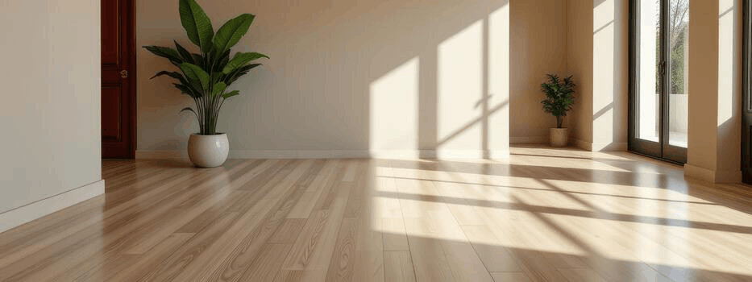

Create the Environment
When it comes to stress relief with craft, the environment where you work influences your process of creation. Minor changes can help minimize distractions and create a more concentrated and centered working atmosphere. Below are some suggestions for optimizing your surroundings to help restore your mental health.
Lighting
Soft, consistent light
Soft, consistent lighting helps reduce strain and maintain focus over time.

Sound
A steady rhythm
Low, steady sound or silence can help establish a rhythm while working.

Organization
Keep materials accessible
Keeping tools organized minimizes interruption and keeps focus on the process.
Scent
Create a sense of presence
Subtle scents can create a sense of routine and calm.